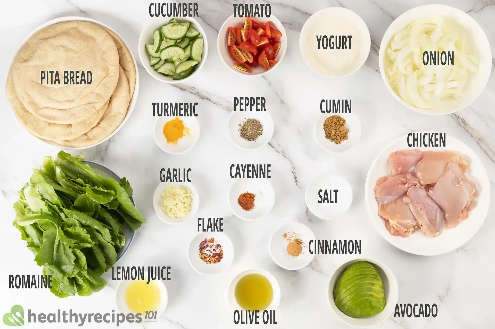

SHAWARMAA!!

Shawarma, a Middle Eastern delight, has become a treasured part of my culinary journey. Its history, a symphony of flavors, and communal experience have ignited my love for this dish. Originating from the Ottoman Empire, shawarma's rich history can be traced back to its unique cooking method - slow-roasting marinated meat on a vertical rotisserie. This process, combined with a medley of spices and marinades, imparts a unique and irresistible flavor. Shawarma's magic lies in the perfect fusion of flavors. Thinly sliced, succulent meat is paired with creamy tahini or garlic sauce, crisp vegetables, and tangy pickles, all wrapped in warm, fluffy bread.
